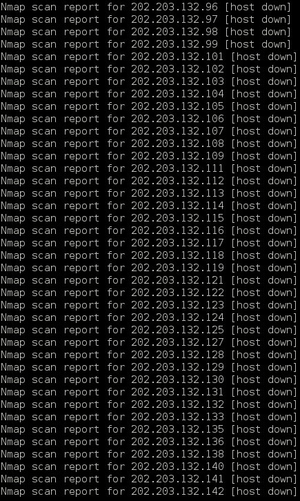
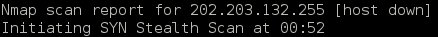
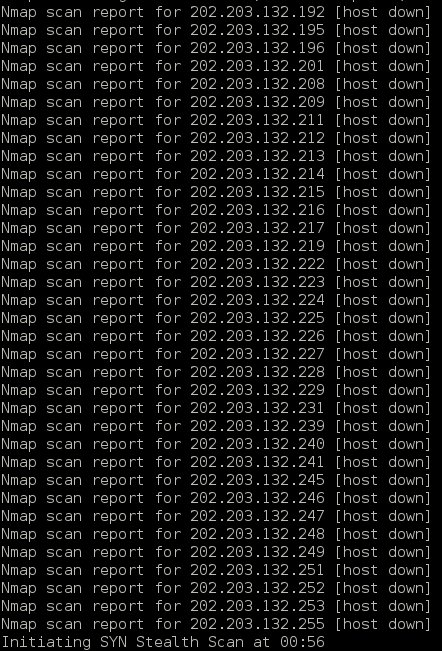
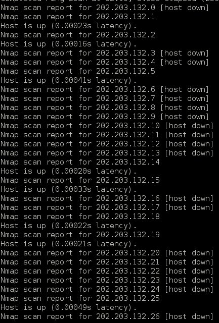

NMAP实验报告
实验环境
- Debian 3.2.41 i686 GNU/Linux
目录
- 1 Simple Example
- 2 Scanning more than one machine
- 3 Scanning specific ports:
- 4 Various Scanning options:
- 4.1 -sS: SYN scanning (this is the default option)
- 4.2 -sT: TCP connect scanning
- 4.3 -sF, -sX, -sN: FIN scan, Xmas tree scan, NULL scan.
- 4.4 -sU: UDP scan.
- 4.5 -sO: Protocol scan
- 4.6 -sR: RPC scan.
- 4.7 -sV: Version scan
- 4.8 -sA: ACK scan
- 4.9 -sI: Idle scan
- 4.10 -sP: Ping scan
- 4.11 -sW: Window scan
- 4.12 -sL: List scan
- 4.13 -iL: input a ipfile
- 5 O/S fingerprinting and version detection
- 6 Typical scenario
- 7 Example from nmap.org
1 Simple Example
- let's begin
nmap 202.203.132.244

- no reverse NDS lookup
nmap -n 202.203.132.244
- verbose:
nmap -n -v 202.203.132.244
- even more:
nmap -n -vv 202.203.132.244
2 Scanning more than one machine
nmap -n -vv 202.203.132.242,244 nmap -n -vv 202.203.132.241-244 nmap -n -vv 202.203.132.241-242,244 nmap -n -vv 202.203.132.* nmap -n -vv 202.203.132.192-255 nmap -n -vv 202.203.132.192/26
- nmap -n -vv 202.203.132.242,244 (scan 242 and 244)
- nmap -n -vv 202.203.132.241-244 (scan 241 to 244)
- nmap -n -vv 202.203.132.241-242,244 (scan 241 to 242, and 244)
- nmap -n -vv 202.203.132.* (scan 1 to 254)


- nmap -n -vv 202.203.132.192-255 (scan 192 to 255)

- nmap -n -vv 202.203.132.192/26 (scan 192 to 254 with netmask 26)
nmap -vv -n 192.168.0-2.* nmap -vv -n 192.168.0,1,2.0-255
- nmap -vv -n 192.168.0-2.* (scan 192.168.0. to 192.168.2.*)*
- nmap -vv -n 192.168.0,1,2.0-255 (same as above)
3 Scanning specific ports:
nmap -vv -n -p 80 202.203.132.244 nmap -vv -n -p 21,23,25,80-120 202.203.132.244 nmap -vv -n -p 21,23,25,80-120 202.203.132.241-244
- test
nmap -vv -n -p 21,23,25,80-120 202.203.132.241-244
4 Various Scanning options:
There are many scanning options available with Nmap. All have their advantages and disadvantages. You should use them according to your requirements.
Contents:
4.1 -sS: SYN scanning (this is the default option)
nmap -vv -n -sS 202.203.132.244
TCP SYN scan gather information about open ports without completing the TCP handshake process. When an open port is identified, the TCP handshake is reset before it can be completed. This technique is often referred to as “half open” scanning.
It's the default scanning technique if you are “root”. It's the most common scan to use because it works on all networks, across all operating systems.
- ADV
The TCP SYN scan never actually creates a TCP session so isn't logged by the destination host's applications. And hence it's a quiet scan.
- DISADV
You need privileged access to the system.
4.2 -sT: TCP connect scanning
nmap -vv -n -sT 202.203.132.244
It performs the 3-way handshake.
- ADV
You don't need to have privileged access.
- DISADV
Since it completes a TCP connection so apparent when application connection logs are examined. I would suggest you to never ever use this scan.
4.3 -sF, -sX, -sN: FIN scan, Xmas tree scan, NULL scan.
nmap –vv –n –sF 218.194.106.91 nmap –vv –n –sX 192.168.0.1 nmap –vv –n –sN 192.168.0.1
These are called “stealth” scans. They send a single frame to a TCP port without any TCP handshaking or additional packet transfers. They are more “stealth” than SYN scan and must be used if the remote machine is not a Windows-based machine. I’ll tell you why.
These scans operate by manipulating the bits of the TCP header. Nmap creates TCP headers that combine bit options that should never occur in the real world. These purposely mangled TCP header packets are thrown at a remote device, and nmap watches for the responses.
Window-based systems will reply with a RST frame for all queries, regardless of the status of the specific port that was queried.
- nmap -n -vv -sF 218.194.106.91 (This server is a windows2003 PS2 server, so it can't scan it)
- nmap -n -vv -sF 202.203.132.244 (Linux server)
- -sX and -sN are as -sF above
- ADV
Since no TCP sessions are established, they are quiet stealthy.
- DISADV
Can't be used against windows-based machine.
4.4 -sU: UDP scan.
nmap -vv -n -sU 202.203.132.244
The only scan in the arsenal of Nmap to identify UDP ports.
- Question
-
I had wait it for a long time,why scanning udp take so long (probably 13 minutes)
4.5 -sO: Protocol scan
nmap -vv -n -sO 202.203.132.244
Sometimes it has to be checked that what protocols the remote machine is running. It locates uncommon IP protocols that may be in use on the remote system. Hence it helps determining the type of remote device, i.e. is that router or printer or workstation etc.
Take about 3 minutes, a little slow
- DISADV
This scan will appear on any network monitoring application that identifies the IP protocol types in use.
4.6 -sR: RPC scan.
nmap -vv -sR 202.203.132.244
It's used to locate and identify RPC applications. It runs automatically during a version scan (-sV, explained later)
- sV is an alias to -sR

These ports are using RPC service as the picture shown
RPC scan opens application sessions and hence it will be logged.c
4.7 -sV: Version scan
nmap –vv –sV 202.203.132.244
The scans which we have seen by now give you the status of the port and the service running on them. For exploiting the service you need the exact eversion number of the service. Version scan givese you this.
It shows the VERSION of each port/service
- DISADV
It opens sessions with the remote applications, which will often display in an application's log file.
4.8 -sA: ACK scan
nmap –vv –sA 218.194.106.91
It's quite useful when there is some packet filtering device or firewall. It never locates an open port. It does the job of identifying ports that are filtered through a firewall. It doesn't open any application sessions and hence the conversation between nmap and the remote device is relatively simple.
We can conclude that all 1000 ports are unfiltered at cs3
- DISADV
It can only tell whether port is filtered or unfiltered. But can never definitively identify an open port.
4.9 -sI: Idle scan
nmap -vv -sI 202.203.132.244
It's the stealthy most scan you can have. Tough to launch because you need a zombie for it. It would not be justice with this great scan to be described in just few lines. I would recommend you to read it in detail.
I don't know how to use this scan,please help.
- ADV
You will never be caught.
- DISADV
Tough to launch as it's not easy to find some zombie machine.
4.10 -sP: Ping scan
You must have heard of Ping sweep. It's Nmap's ping sweep.
To check whether this machine is up or not, do
nmap –vv –sP 202.203.132.244
To check the whole subnet (254) machines and will tell you which are up
nmap –vv –sP 202.203.132.*
You can see the output like this

- DISADV
Ping scan will not interoperate with any other type of scan.
4.11 -sW: Window scan
Forget it. As the number of operating systems vulnerable to its methodology is dwindling as operating systems are upgraded and patched.
nmap -n -vv -sW 202.203.132.244
The output like this
- You can use -sP to replace it
4.12 -sL: List scan
Would like to say only one line about it that you must use it if a separate application provides nmap with a list of IP addresses. Rest read yourself.
i don't know how to play it,help!
4.13 -iL: input a ipfile
I had an ipfile which contains ip addresses that i want to scan. then let's scan
nmap -n -vv -iL ./ipfile
5 O/S fingerprinting and version detection
Ok, now you can use various scanning techniques to look for open/closed or filtered/unfiltered TCP as well as UDP ports. Don't you want to know the remote operating system running?
- Contents:
5.1 -O: Operating system fingerprinting
nmap -vv -O 202.203.132.244
It will tell you or at least tries its best to tell you the remote operating system along with the version it's using. It at least need one open and one close TCP port. In case it doesn't, it won't be able to give the accurate result. In that case you should use some third party tool.
Why i can't see the type of OS at cs3
- DISADV
A trained eye will quickly identify that someone is watching the network.
5.2 -sV: Version detection
nmap -vv -sV 202.203.132.244
As has been explained it will help you know the version of the service running on the remote machine.
5.3 -A: Additional, Advanced, Aggressive option
Its comprises of both the operating system fingerprinting process (-O) and the version scanning process (-sV). i.e following two are same:
nmap -vv -sV -O 202.203.132.244 nmap -vv -A 202.203.132.244
The output has both OS type and Version
6 Typical scenario
- First, we’ll sweep the network with a simple Ping scan to determine which hosts are
online.
nmap -sP 202.203.132.192/26
Tell me how many hosts are up?
at the end of output, we can see 30 hosts up.
- Now we’re going to take a look at 202.203.132.240-242,244. These IPs belong to School
of CIS. We’ll scan 202.203.132.240-242,244 using a SYN scan [-sS] and -A to enable OS
fingerprinting and version detection.
nmap -sS -A -n -vv 202.203.132.240-242,244
Tell me what OS they are running? What services are they running?
- 202.203.132.242
We can see the OS is Debian
There are 13 service on host


- 202.203.132.242
7 Example from nmap.org
nmap -A -T4 202.203.132.244
1. This may provide more usefull infomation, such as ssh-hostkey: 1024 28:fc:fd:15:c0:ee:52:59:0c:01:c6:4a:df:2e:74:3c (DSA) 2048 63:88:03:dd:1f:6f:0e:59:81:af:93:36:b9:ba:4c:51 (RSA) 2. Network Distance: 3 hops 3. Service Info: Host: cs3.swfu.edu.cn; OSs: Unix, Linux; CPE: cpe:/o:linux:ke│ rnel 4. with -T4 can speed up the scan.